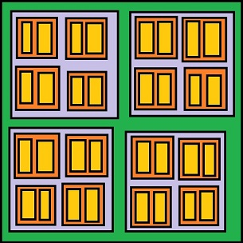

import mathWhat are Tensors
Tensors are a specialized data structure that are very similar to arrays and matrices. In PyTorch, we use tensors to encode the inputs and outputs of model, as well as the model’s parameters. Tensors are similar to NumPy’s arrays, expect that tensors can run on GPU or other hardware.
Creating PyTorch Tensors
import torchFactory Method to create Tensor
The simplest way to create a tensor is with the torch.empty() call:
x = torch.empty(3,4)
print(type(x))
print(x)<class 'torch.Tensor'>
tensor([[1.2268e-35, 0.0000e+00, 3.0829e-44, 0.0000e+00],
[ nan, 0.0000e+00, 1.8314e+25, 6.9768e+22],
[8.5305e+02, 2.6778e+20, 3.0866e+29, 1.0170e+31]])- this creates a tensor using on of the numerous factory methods attached to the torch module.
- the tensor itself is 2-dimensional, having 3 rows and 4 columns.
- the type of the object returned is torch.Tensor, which is an alias for torch.FloatTensor, by default PyTorch tensors are 32-bit floating point numbers.
- there are some random-looking values in the tensor. The torch.empty() call allocates memory for the tensor, but does not initialize it with any values - so what your’re seeing is whatever was in memory at the time of allocation.
If you want to initialize the tensor with some vales. Common cases are all zeros, all ones, or random values. The torch module provides factory methods for alle of these:
# create a tensor full of zeros
zeros = torch.zeros(2,3)
print(zeros)
# create a tensor full of ones
ones = torch.ones(2,3)
print(ones)
# create a tensor full of random values
torch.manual_seed(1779)
random = torch.rand(2,3)
print(random)tensor([[0., 0., 0.],
[0., 0., 0.]])
tensor([[1., 1., 1.],
[1., 1., 1.]])
tensor([[0.3699, 0.5704, 0.4876],
[0.3391, 0.1535, 0.0455]])Terminology about tensors and thier number of dimensions
- You will sometimes see a 1-dimensional tensor called a vector.
- A 2-dimensional tensor is often referred as a matrix.
- Anything with more than two dimensions is generally just called a tensor.
Random Tensor and Seeding
Sometimes you want the same random values for reproducibility. Manually setting your random number generator’s seed fixes the random outputs to get the same results.
torch.manual_seed(1729)
random1 = torch.rand(2,3)
print(random1)
random2 = torch.rand(2,3)
print(random2)
torch.manual_seed(1729)
random3 = torch.rand(2,3)
print(random3)
random4 = torch.rand(2,3)
print(random4)tensor([[0.3126, 0.3791, 0.3087],
[0.0736, 0.4216, 0.0691]])
tensor([[0.2332, 0.4047, 0.2162],
[0.9927, 0.4128, 0.5938]])
tensor([[0.3126, 0.3791, 0.3087],
[0.0736, 0.4216, 0.0691]])
tensor([[0.2332, 0.4047, 0.2162],
[0.9927, 0.4128, 0.5938]])What you should see above is that random1 and random3 carry identical values, as do random2 and random4. Manually resetting the seed gives the same results when you compute the things again.
Tensor Shapes
Often when you are performing operations on two or more tensors, they will need to be of the same shape - that is, having the same number of dimensions and the same number of cells in each dimension. For that, we have the **torch.*_like()** methodes:
x = torch.empty(2,2,3)
print(x.shape)
print(x)
empty_like_x = torch.empty_like(x)
print(empty_like_x.shape)
print(empty_like_x)
zeros_like_x = torch.zeros_like(x)
print(zeros_like_x.shape)
print(zeros_like_x)
ones_like_x = torch.ones_like(x)
print(ones_like_x.shape)
print(ones_like_x)
rand_like_x = torch.rand_like(x)
print(rand_like_x.shape)
print(rand_like_x)torch.Size([2, 2, 3])
tensor([[[1.3368e-35, 0.0000e+00, 1.2282e-35],
[0.0000e+00, 0.0000e+00, 0.0000e+00]],
[[0.0000e+00, 0.0000e+00, 0.0000e+00],
[0.0000e+00, 0.0000e+00, 0.0000e+00]]])
torch.Size([2, 2, 3])
tensor([[[1.1759e-09, 4.5806e-41, 1.2202e-35],
[0.0000e+00, 4.4842e-44, 0.0000e+00]],
[[1.1210e-43, 0.0000e+00, 1.2240e-35],
[0.0000e+00, 1.4013e-45, 0.0000e+00]]])
torch.Size([2, 2, 3])
tensor([[[0., 0., 0.],
[0., 0., 0.]],
[[0., 0., 0.],
[0., 0., 0.]]])
torch.Size([2, 2, 3])
tensor([[[1., 1., 1.],
[1., 1., 1.]],
[[1., 1., 1.],
[1., 1., 1.]]])
torch.Size([2, 2, 3])
tensor([[[0.6128, 0.1519, 0.0453],
[0.5035, 0.9978, 0.3884]],
[[0.6929, 0.1703, 0.1384],
[0.4759, 0.7481, 0.0361]]])The first new thing in the code cell above is the use of the .shape property on a tensor. This property contains a list of the extent of each dimension of a tensor - in our case, x is a three-dimensional tensor with shape 2x2x3. Then we created new tensor’s with .empty_like(), .zeros_like(), .ones_like(), .rand_like() methods. With .shape we can verify that x has the same size as our new tensors.
Create a Tensor with specific data directly
some_constants = torch.tensor([[3.141, 2.789], [1.234, 4.923]])
print(some_constants.shape)
print(some_constants)
some_intergers = torch.tensor((2,3,4,5,6,7,8,9,10,11))
print(some_intergers.shape)
print(some_intergers)
more_intergers = torch.tensor(((2,4,6), [3,6,9]))
print(more_intergers.shape)
print(more_intergers)torch.Size([2, 2])
tensor([[3.1410, 2.7890],
[1.2340, 4.9230]])
torch.Size([10])
tensor([ 2, 3, 4, 5, 6, 7, 8, 9, 10, 11])
torch.Size([2, 3])
tensor([[2, 4, 6],
[3, 6, 9]])Using torch.tensor() is the most straightforward way to create a tensor if your already have data in a Python tuple or list. Nesting will result in multi-dimensional tensor.
Note: torch.tensor() creates a copy of the data.
Understanding Tensor Shapes
Consider tensor shapes as the number of lists that a dimension holds. For instance, a tensor shaped (4,4,2) will have four elements, which all contain 4 elements, which in turn have 2 elements.
- The first holds 4 elements.
- The second holds 4 elements.
- The third dimension holds 2 elements.

tensor442 = torch.empty(4,4,2)
print(tensor442.shape)
print(tensor442)torch.Size([4, 4, 2])
tensor([[[1.1759e-09, 4.5806e-41],
[1.1759e-09, 4.5806e-41],
[0.0000e+00, 0.0000e+00],
[0.0000e+00, 0.0000e+00]],
[[0.0000e+00, 0.0000e+00],
[1.8788e+31, 1.7220e+22],
[2.1715e-18, 4.2533e-05],
[1.3148e+22, 5.4412e-05]],
[[6.5555e-10, 3.3058e+21],
[3.2722e+21, 8.2730e+20],
[5.3134e-08, 1.7264e-07],
[3.2480e-09, 2.3052e-12]],
[[1.8788e+31, 7.9303e+34],
[6.1949e-04, 1.8590e+34],
[7.7767e+31, 7.1536e+22],
[3.3803e-18, 2.0552e+32]]])Data structures in tensors
# [x]
# -----------------------
# scalar
# 0D (zero dimension)
print('create tensor:')
d0 = torch.ones(1)
print(d0)
print('create tensor:')
d0 = torch.tensor([1.])
print(d0)
print('get value 1:')
print(d0[0])
print('shape:')
print(d0.shape)create tensor:
tensor([1.])
create tensor:
tensor([1.])
get value 1:
tensor(1.)
shape:
torch.Size([1])# [x]
# [x]
# [x]
# -----------------------
# vector
# 1D (one dimension)
print('create tensor:')
d1 = torch.ones(3)
print(d1)
print('create tensor:')
d1 = torch.tensor([1.,2.,3.])
print(d1)
print('get value 3:')
print(d1[2])
print('shape:')
print(d1.shape)create tensor:
tensor([1., 1., 1.])
create tensor:
tensor([1., 2., 3.])
get value 3:
tensor(3.)
shape:
torch.Size([3])# [x x x]
# [x x x]
# [x x x]
# -----------------------
# matrix
# 2D (two dimension)
print('create tensor:')
d2 = torch.ones(3,3)
print(d2)
print('create tensor:')
d2 = torch.tensor([[1.,2.,3.],[4.,5.,6.],[7.,8.,9.]])
print(d2)
print('get value 4:')
print(d2[1,0])
print('shape:')
print(d2.shape)create tensor:
tensor([[1., 1., 1.],
[1., 1., 1.],
[1., 1., 1.]])
create tensor:
tensor([[1., 2., 3.],
[4., 5., 6.],
[7., 8., 9.]])
get value 4:
tensor(4.)
shape:
torch.Size([3, 3])# [x x x] [x x x] [x x x]
# [x x x] [x x x] [x x x]
# [x x x] [x x x] [x x x]
# -----------------------
# tensor
# 3D (3 dimension)
print('create tensor:')
d3 = torch.ones(3,3,3)
print(d3)
print('create tensor:')
d3 = torch.tensor([[[1.,1.,1.],[1.,1.,1.],[1.,1.,1.]],[[2.,2.,2.],[2.,5.,2.],[2.,2.,2.]],[[3.,3.,3.],[3.,3.,3.],[3.,3.,3.]]])
print(d3)
print('get value:')
print(d3[1,1,1])
print('shape:')
print(d3.shape)create tensor:
tensor([[[1., 1., 1.],
[1., 1., 1.],
[1., 1., 1.]],
[[1., 1., 1.],
[1., 1., 1.],
[1., 1., 1.]],
[[1., 1., 1.],
[1., 1., 1.],
[1., 1., 1.]]])
create tensor:
tensor([[[1., 1., 1.],
[1., 1., 1.],
[1., 1., 1.]],
[[2., 2., 2.],
[2., 5., 2.],
[2., 2., 2.]],
[[3., 3., 3.],
[3., 3., 3.],
[3., 3., 3.]]])
get value:
tensor(5.)
shape:
torch.Size([3, 3, 3])# dimension > 3
# -----------------------
# tensor
# XD (x > 3 dimension)
print('create tensor:')
dx = torch.ones(4,2,2,2)
print(dx)create tensor:
tensor([[[[1., 1.],
[1., 1.]],
[[1., 1.],
[1., 1.]]],
[[[1., 1.],
[1., 1.]],
[[1., 1.],
[1., 1.]]],
[[[1., 1.],
[1., 1.]],
[[1., 1.],
[1., 1.]]],
[[[1., 1.],
[1., 1.]],
[[1., 1.],
[1., 1.]]]])Tensor Data Types
Setting the datatype of a tensor is possible a couple of ways:
a = torch.ones((2,3), dtype=torch.int16)
print(a)
b = torch.rand((2,3), dtype=torch.float64) * 20
print(b)
c = b.to(torch.int32)
print(c)tensor([[1, 1, 1],
[1, 1, 1]], dtype=torch.int16)
tensor([[ 0.9956, 1.4148, 5.8364],
[11.2406, 11.2083, 11.6692]], dtype=torch.float64)
tensor([[ 0, 1, 5],
[11, 11, 11]], dtype=torch.int32)The simplest way to set underlying data type of a tensor is with an optional argument at creation time. At “a” we set dtype=torch.int16. Printing a shows that the data is 1 rather than 1. (1 int, 1. float)
Another thing to notice by printing out a tensor it also shows the specified dtype.
Another way to set the datatype is with the .to() method. In the cell above, we create a random floating point tensor b and den converted b to a 32-bit integer in c.
PyTorch datatypes:
- torch.bool
- torch.int8
- torch.uint8
- torch.int16
- torch.int32
- torch.int64
- torch.half
- torch.float
- torch.double
- torch.bfloat
Math & Logic with Tensors
Basic arithmetic with tensors and how tensor interact with simple scalars:
ones = torch.zeros(2,2) + 1
twos = torch.ones(2,2) * 2
threes = (torch.ones(2,2) * 7 - 1) / 2
fours = twos ** 2
sqrt2s = twos ** 0.5
print(ones)
print(twos)
print(threes)
print(fours)
print(sqrt2s)tensor([[1., 1.],
[1., 1.]])
tensor([[2., 2.],
[2., 2.]])
tensor([[3., 3.],
[3., 3.]])
tensor([[4., 4.],
[4., 4.]])
tensor([[1.4142, 1.4142],
[1.4142, 1.4142]])Arithmetic operations between tensors and scalars, such as addition, subtraction, multiplication, division, and exponentiation are distributed over every element of the tensor.
Operation between tow tensors also behave like you’d intuitively expect:
powers2 = twos ** torch.tensor([[1,2], [3,4]])
print(powers2)
fives = ones + fours
print(fives)
dozens = threes * fours
print(dozens)tensor([[ 2., 4.],
[ 8., 16.]])
tensor([[5., 5.],
[5., 5.]])
tensor([[12., 12.],
[12., 12.]])It’s important to note that all of the tensors in the previous code cell were of identical shape. What happens when we try to perform a binary operation on tensor if dissimilar shape?
# The following throws a run-time error. This is intentional.
a = torch.rand(2,3)
b = torch.rand(3,2)
print(a * b)RuntimeError: The size of tensor a (3) must match the size of tensor b (2) at non-singleton dimension 1In general case, you cannot operate on tensors of different shape this way,even in a case like the call above, where the tensor have identical number of elements.
In Brief: Tensor Broadcasting
The exception to the same-shape rule is tensor broadcasting. Here’s an example:
import torch
rand = torch.rand(2,4)
doubled = rand * (torch.ones(1,4)*2)
print(rand)
print(doubled)tensor([[0.2024, 0.5731, 0.7191, 0.4067],
[0.7301, 0.6276, 0.7357, 0.0381]])
tensor([[0.4049, 1.1461, 1.4382, 0.8134],
[1.4602, 1.2551, 1.4715, 0.0762]])How is it we get to multiply a 2x4 tensor by a 1x4 tensor?
Broadcasting is a way to perform an operation between tensors that have similarities in their shapes. In the example above, the one-row, four-column tensor is multiplied by both rows of the two-row, four-column tensor.

This is an important operation in Deep Learning. The common example is multiplying a tensor of learning weights by a batch of input tensors, applying the operation to each instance in the batch separately, and returning a tensor of identical shape - just like our (2,4) * (1,4) example above returned a tensor of shape (2,4).
The rules of broadcasting are:
- Each tensor must have at least one dimension - no empty tensors.
- Comparing the dimension sizes of the tow tensors, going from last to first:
- Each dimension must be equal of
- One of the dimension must be of size 1, or
- Dimension does not exist in one of the tensors
Tensors of identical shape, of course are trivially “broadcastable”, as you saw earlier.
Here are some examples of situation that honor the above rules and allow broadcasting:
a = torch.ones( 4, 3, 2)
print(a)tensor([[[1., 1.],
[1., 1.],
[1., 1.]],
[[1., 1.],
[1., 1.],
[1., 1.]],
[[1., 1.],
[1., 1.],
[1., 1.]],
[[1., 1.],
[1., 1.],
[1., 1.]]])b = a * torch.rand( 3, 2) # 3rd & 2nd dims identical to a, dim 1 absent
print(b)tensor([[[0.0381, 0.2138],
[0.5395, 0.3686],
[0.4007, 0.7220]],
[[0.0381, 0.2138],
[0.5395, 0.3686],
[0.4007, 0.7220]],
[[0.0381, 0.2138],
[0.5395, 0.3686],
[0.4007, 0.7220]],
[[0.0381, 0.2138],
[0.5395, 0.3686],
[0.4007, 0.7220]]])c = a * torch.rand( 3, 1) # 3rd dim = 1, 2nd dim identical to a
print(c)tensor([[[0.8217, 0.8217],
[0.2612, 0.2612],
[0.7375, 0.7375]],
[[0.8217, 0.8217],
[0.2612, 0.2612],
[0.7375, 0.7375]],
[[0.8217, 0.8217],
[0.2612, 0.2612],
[0.7375, 0.7375]],
[[0.8217, 0.8217],
[0.2612, 0.2612],
[0.7375, 0.7375]]])d = a * torch.rand( 1, 2) # 3rd dim identical to a, 2nd dim = 1
print(d)tensor([[[0.8328, 0.8444],
[0.8328, 0.8444],
[0.8328, 0.8444]],
[[0.8328, 0.8444],
[0.8328, 0.8444],
[0.8328, 0.8444]],
[[0.8328, 0.8444],
[0.8328, 0.8444],
[0.8328, 0.8444]],
[[0.8328, 0.8444],
[0.8328, 0.8444],
[0.8328, 0.8444]]])Look closely at the values of each tensor above:
- The multiplication operation that created b was broadcast over every ‘layer’ of a.
- For c, the operation was broadcast over ever layer and row of a - every 3-element column is identical.
- For d, we switched it around - now every row is identical, across layers and columns.
One example where broadcasting will fail:
a = torch.ones( 4, 3, 2)
b = a * torch.rand( 4, 3) # dimension must match last-to-first
c = a * torch.rand( 2, 3) # both 3rd & 2nd dims different
d = a * torch.rand(0,) # cant broadcast with an empty tensorRuntimeError: The size of tensor a (2) must match the size of tensor b (3) at non-singleton dimension 2More Math with Tensor
PyTorch tensors have over three hundred operations that can be performed on them. Here a small sample from some of the major categories of operations.
# common functions
a = torch.rand(2,4) * 2 - 1
print('Common functions:')
print(torch.abs(a))
print(torch.ceil(a))
print(torch.floor(a))
print(torch.clamp(a, -0.5, 0.5))
# trigonemtric fucntion and thier inverses
angles = torch.tensor([0, math.pi / 4, math.pi / 2, 3 * math.pi / 4])
sines = torch.sin(angles)
inverses = torch.asin(sines)
print('\nSine and arcsine:')
print(angles)
print(sines)
print(inverses)
# bitwise operations
print('\nBitwise XOR:')
b = torch.tensor([1,5,11])
c = torch.tensor([2,7,10])
print(torch.bitwise_xor(b,c))
# comparisons:
print('\nBroadcasted, element-wise equality comparison:')
d = torch.tensor([[1.,2.],[3.,4.]])
e = torch.ones(1,2) # many comparison ops support broadcasting!
print(torch.eq(d,e)) # returns a tensor of type bool
# reductions:
print('\nReduction ops:')
print(torch.max(d)) # returns a single-element tensor
print(torch.max(d).item()) # extracts the value from the returned tensor
print(torch.mean(d)) # average
print(torch.std(d)) # standard deviation
print(torch.prod(d)) # product of all numbers
print(torch.unique(torch.tensor([1,2,1,2,1,2]))) # filter unique elements
# vector and linear algebra operations
v1 = torch.tensor([1., 0., 0.]) # x unit vector
v2 = torch.tensor([0.,1.,0.]) # y unit vector
m1 = torch.rand(2,2) # random matrix
m2 = torch.tensor([[3.,0.], [0.,3.]]) # three times identity matrix
print('\nVector & Matrices:')
print(torch.cross(v2,v1)) # negative of z unit vector (v1 x v2 == -v2 x v1)
print(m1)
m3 = torch.matmul(m1,m2)
print(m3) # 3 times m1
print(torch.svd(m3)) # singular value decompositionCommon functions:
tensor([[0.0792, 0.3893, 0.6054, 0.3429],
[0.1310, 0.9869, 0.5530, 0.2932]])
tensor([[1., -0., -0., -0.],
[1., -0., 1., -0.]])
tensor([[ 0., -1., -1., -1.],
[ 0., -1., 0., -1.]])
tensor([[ 0.0792, -0.3893, -0.5000, -0.3429],
[ 0.1310, -0.5000, 0.5000, -0.2932]])
Sine and arcsine:
tensor([0.0000, 0.7854, 1.5708, 2.3562])
tensor([0.0000, 0.7071, 1.0000, 0.7071])
tensor([0.0000, 0.7854, 1.5708, 0.7854])
Bitwise XOR:
tensor([3, 2, 1])
Broadcasted, element-wise equality comparison:
tensor([[ True, False],
[False, False]])
Reduction ops:
tensor(4.)
4.0
tensor(2.5000)
tensor(1.2910)
tensor(24.)
tensor([1, 2])
Vector & Matrices:
tensor([ 0., 0., -1.])
tensor([[0.7016, 0.6826],
[0.9413, 0.4460]])
tensor([[2.1048, 2.0479],
[2.8240, 1.3380]])
torch.return_types.svd(
U=tensor([[-0.6835, -0.7299],
[-0.7299, 0.6835]]),
S=tensor([4.2305, 0.7013]),
V=tensor([[-0.8273, 0.5617],
[-0.5617, -0.8273]]))This a small sample of more details and the full inventory of math functions.
Altering Tensors in Place
Most binary operations on tensors will return a third, new tensor. When we say c = a * b (where a and b are tensors), the new tensor c will occupy a region of memory distinct from the other tensors.
There are times, though, that you may whish to alter a tensor in place - for example. if you’re doing an element-wise computation where you can discard intermediate value. For this, most of the math function have a version with an underscore(_) that will alter a tensor in place.
For example:
a = torch.tensor([0, math.pi / 4, math.pi / 2, 3 * math.pi / 4])
print('a:')
print(a)
print(torch.sin(a)) # this operation creates a new tensor in memory
print(a) # a has not changed
b = torch.tensor([0, math.pi / 4, math.pi / 2, 3 * math.pi / 4])
print('\nb:')
print(b)
print(torch.sin_(b)) # note the underscore
print(b) # b has changeda:
tensor([0.0000, 0.7854, 1.5708, 2.3562])
tensor([0.0000, 0.7071, 1.0000, 0.7071])
tensor([0.0000, 0.7854, 1.5708, 2.3562])
b:
tensor([0.0000, 0.7854, 1.5708, 2.3562])
tensor([0.0000, 0.7071, 1.0000, 0.7071])
tensor([0.0000, 0.7071, 1.0000, 0.7071])For arithmetic operations, there are functions that behave similarly:
a = torch.ones(2,2)
b = torch.rand(2,2)
print('Before: ')
print(a)
print(b)
print('\nAfter adding:')
print(a.add_(b))
print(a)
print(b)
print('\nAfter multiplying')
print(b.mul_(b))
print(b)Before:
tensor([[1., 1.],
[1., 1.]])
tensor([[0.9289, 0.6293],
[0.6264, 0.4704]])
After adding:
tensor([[1.9289, 1.6293],
[1.6264, 1.4704]])
tensor([[1.9289, 1.6293],
[1.6264, 1.4704]])
tensor([[0.9289, 0.6293],
[0.6264, 0.4704]])
After multiplying
tensor([[0.8628, 0.3960],
[0.3924, 0.2212]])
tensor([[0.8628, 0.3960],
[0.3924, 0.2212]])Note that these in-place arithmetic functions are methods an the torch.Tensor object, not attached to the torch module like many other functions (e.g. torch.sin()). As you can see from a.add_(b), the calling tensor is the one that gets changed in place.
There is another option for placing the result of computation in an existing, allocated tensor. Many of the methods and functions we’ve seen so far - including creation methods! - have an out argument that lets you specify a tensor to receive the output. If the out tensor is the correct shape an dtype, this can happen without a new memory allocation:
a = torch.rand(2,2)
b = torch.rand(2,2)
c = torch.zeros(2,2)
old_id = id(c)
print(c)
d = torch.matmul(a,b, out=c)
print(c) # contents of c have changed
assert c is d # test c & d are same objects, not just containing equal values
assert id(c), old_id # make sure that our new c is the same object as the old one
torch.rand(2,2, out=c) # works for creation too!
print(c) # c has changed again
assert id(c), old_id # still the same object!tensor([[0., 0.],
[0., 0.]])
tensor([[0.5694, 0.1489],
[0.8242, 0.4668]])
tensor([[0.2138, 0.5395],
[0.3686, 0.4007]])Copying Tensors
As with any object in Python, assigning a tensor to a variable makes the variable a label of the tensor, and does not copy it. For example.
a = torch.ones(2,2)
b = a
a[0][1] = 561 # we change a ...
print(b) # and b is also alteredtensor([[ 1., 561.],
[ 1., 1.]])But what is you wand a separate copy of the data to work on? The clone() method is there for you:
a = torch.ones(2,2)
b = a.clone()
assert b is not a # differen objects in memory ...
print(torch.eq(a,b)) # ... but still with the same contents
a[0][1] = 561
print(b)tensor([[True, True],
[True, True]])
tensor([[1., 1.],
[1., 1.]])There is an important thing to be aware of when using clone(). If your source tensor has autograd, enabled then so will the clone. This will be covered more deeply in the video on autograd, but if you want the light version of the details, continue on.
In many cases, this will be what you want. For example, if your model has multiple computations paths in its forward() method, and both the original tensor and ist clone contribute to the model’s output, then to enable model learning you want autograd turned on for both tensors. If your source tensor has autograd enabled (which it generally will if it’s a set of learning weights or derived from a computation involving the weights), then you’ll get the result you want.
On the other hand, if you’re doing a computation where neither the original tensor nor its clone need to track gradients, then as long as the source tensor has autograd turned off, you’re good to go.
There is a third case, though: imagine you’re performing a computation in your model’s forward() function, where gradients are turned on for everything by default, but you want to pull out some values mid-stream to generate some metrics. In this case, you don’t want the clone copy of your source tensor to track gradients - performance is improved with autograd’s history tracking turned off. For this, you can use .detach() method on the source tensor:
a = torch.rand(2,2, requires_grad=True) # turn on autograd
print(a)
b = a.clone()
print(b)
c = a.detach().clone()
print(c)
print(a)tensor([[0.2024, 0.5731],
[0.7191, 0.4067]], requires_grad=True)
tensor([[0.2024, 0.5731],
[0.7191, 0.4067]], grad_fn=<CloneBackward0>)
tensor([[0.2024, 0.5731],
[0.7191, 0.4067]])
tensor([[0.2024, 0.5731],
[0.7191, 0.4067]], requires_grad=True)What’s happening here ?
- We create a with requires_grad=True on. We haven’t covered this optional argument yet, but will during the unit on autograd.
- When we print a, it informs us that the property requires_grad=True - this means that autograd and computation history tracking are turned on.
- We clone a an label it b. When we print b, we can see that it’s tracking its computation history - it has inherited a’s autograd settings, and added to the computation history.
- We clone a into c, but we call detach() first.
- Printing c, we see no computation history, and no requires_grad=True.
The detach() method detaches the tensor from its computation history. It says “do whatever comes next as if autograd was off”. It does this without changing a - you can see that when we print a again at the end, it retains its requires_grad=True property.
Moving to GPU
One of the major advantage of PyTorch is its robust acceleration on CUDA-compatible Nividia GPUs. (“CUDA” stands for Compute Unified Device Architecture, which is Nvidia’s platform for parallel computing). So far, everything we’ve done has been on CPU. How do we move to the faster hardware?
First, we should check whether a GPU is available, with the is_available() method.
Note: If you do not have a CUDA-compatible GPU and CUDA divers installed, the executable cells in this section will not execute any GPU-related code.
if torch.cuda.is_available():
print('We have GPU!')
else:
print('Sorry, CPU only')We have GPU!Once we’ve determined that one or more GPUs is available, we need to put out data someplace where the GPU can see it. Your GPU does computation on data in your computers RAM. Your GPU has dedicated memory attached to it. Whenever you want to perform a computation on a device, you must move all the data needed for that computation to memory accessible by that device. (Colloquially, “moving the data to memory accessible by the GPU” is shorted to, “moving the data to the GPU”.)
There multiple ways to get your data onto your target device. Yo may do it at creation time:
if torch.cuda.is_available():
gpu_rand = torch.rand(2,2,device='cuda')
print(gpu_rand)
else:
print('Sorry, GPU only')tensor([[0.3344, 0.2640],
[0.2119, 0.0582]], device='cuda:0')By default, new tensor are created ont the CPU, so we have to specify when we want to create out tensor on the GPU with the optional device argument. You can see when we print the new tensor, PyTorch informs us which device it’s on (if it’s not on CPU).
You can query the number of GPUs with torch.cuda.device_count(). If you have more than one GPU, you can specify them by index: device=‘cuda:0’, device=‘coda:1’, etc.H
As a coding practice, specifying our devices everywhere with string constants is pretty fragile. In an ideal world, your code would perform robustly wheter you’re on CPU or GPU hardware. You can do this by creating a device handle that can be passed to your tensors instead of a string:
if torch.cuda.is_available():
my_device = torch.device('cuda')
else:
my_device = torch.device('cpu')
print('Device: {}'.format(my_device))
x = torch.rand(2,2, device=my_device)
print(x)Device: cuda
tensor([[0.0024, 0.6778],
[0.2441, 0.6812]], device='cuda:0')If you have an existing tensor living on one device, you can move it to another with the to() method. The following line of code creates a tensor on CPU, and moves it to whichever device handle you acquired in the previous cell.
y = torch.rand(2,2)
y = y.to(my_device)It is important to know that in order to do computation involving tow or more tensors, all of the tensors must be on the same device. The following code will throw a runtime error, regardless of whether you have a GPU device available:
x = torch.rand(2,2, device='cpu')
y = torch.rand(2,2, device='cuda')
z = x + y # exception will be thrownRuntimeError: Expected all tensors to be on the same device, but found at least two devices, cuda:0 and cpu!Manipulating Tensors Shapes
Sometimes, you’ll need to change the chape of your tensor. Below. we’ll look at a few common cases, and how to handle them.
changing the Number or Dimensions
One chase where you might need to change the number of dimension is passing a single instance of input to your model. PyTorch models generally expect batches of input.
For example, imagine having a model that works on 3 x 226 x 226 images - a 226-pixel square with 3 color channels. When you load and transform it, you’ll get a tensor of shape (3,226,226). Your model, though, is expecting input of shape (N, 3, 226, 226), where N is the number of images in the batch. So how do you make a batch of one?
a = torch.rand(3,226,226)
b = a.unsqueeze(0)
print(a.shape)
print(b.shape)torch.Size([3, 226, 226])
torch.Size([1, 3, 226, 226])The unsqueeze() method adds a dimension of extent 1. unsqueeze(0) adds it as a new zeroth dimension - now you have a batch of one!
So if that’s unsqueezing? What do we mean by squeezing? We’re taking advantage of the fast that any dimension of extent 1 does not chang the number of elements in the tensor.
c = torch.rand(1,1,1,1,1)
print(c)tensor([[[[[0.5731]]]]])Continuing the example above, let’s say the model’s output is a 20-element vector for each input. You would then expect the output to have shape (N,20), where N is the number of instances in the input batch. That means that for our single-input batch, we’ll get an output of shape(1,20).
What if you want to do some non-batched computation with that output - something that’s just expecting a 20-element vector?
a = torch.rand(1,20)
print(a.shape)
print(a)
b = a.squeeze(0)
print(b.shape)
print(b)
c = torch.rand(2,2)
print(c.shape)
d = c.squeeze(0)
print(d.shape)torch.Size([1, 20])
tensor([[0.2330, 0.8441, 0.9004, 0.3995, 0.6324, 0.9464, 0.0113, 0.5183, 0.9807,
0.6545, 0.4144, 0.0696, 0.4648, 0.4491, 0.6265, 0.9411, 0.4922, 0.5461,
0.5396, 0.3053]])
torch.Size([20])
tensor([0.2330, 0.8441, 0.9004, 0.3995, 0.6324, 0.9464, 0.0113, 0.5183, 0.9807,
0.6545, 0.4144, 0.0696, 0.4648, 0.4491, 0.6265, 0.9411, 0.4922, 0.5461,
0.5396, 0.3053])
torch.Size([2, 2])
torch.Size([2, 2])You can see from the shape that our 2-dimensional tensor is now 1-dimensional, and if you look closely at the output of the cell above you’ll see that printing a shows an “extra” set of square brackets [] due to having an extra dimension.
You may only squeeze() dimension of extent 1. See above where we try to squeeze a dimension of size 2 in c, and get back the same shape we started with. Calls to squeeze() and unsqueeze() can only act on dimensions of extent 1 because to do otherwise would chang the number of elements in the tensor.
Another place you might use unsqueeze() is to ease broadcasting. Recall the example above where we had the following code:
a = torch.ones(4,3,2)
c = a * torch.rand( 3,1) # 3rd dim = 1, 2nd dim identical to a
print(c)tensor([[[0.7765, 0.7765],
[0.3534, 0.3534],
[0.7016, 0.7016]],
[[0.7765, 0.7765],
[0.3534, 0.3534],
[0.7016, 0.7016]],
[[0.7765, 0.7765],
[0.3534, 0.3534],
[0.7016, 0.7016]],
[[0.7765, 0.7765],
[0.3534, 0.3534],
[0.7016, 0.7016]]])The net effect of that was to broadcast the operation over dimensions 0 and 2, causing the random, 3 x 1 tensor to be multiplied element-wise by every 3-element column in a.
What if the random vector hat just been 3-element vector? We’d lose the ability to do the broadcast, because the final dimensions would not match up according to the broadcasting rules. unsqueeze() comes to the rescue:
a = torch.ones(4,3,2)
b = torch.rand( 3) # trying to multiply a * b give a runtime error
c = b.unsqueeze(1) # change to a 2-dimensional tensor, adding new dim at the end
print(c.shape)
print(a * c)torch.Size([3, 1])
tensor([[[0.6826, 0.6826],
[0.9413, 0.9413],
[0.4460, 0.4460]],
[[0.6826, 0.6826],
[0.9413, 0.9413],
[0.4460, 0.4460]],
[[0.6826, 0.6826],
[0.9413, 0.9413],
[0.4460, 0.4460]],
[[0.6826, 0.6826],
[0.9413, 0.9413],
[0.4460, 0.4460]]])The squeeze() and unsqueeze() methods also have in-place versions, squeeze_() and unsqueeze_():
batch_me = torch.rand(3,226,226)
print(batch_me.shape)
batch_me.unsqueeze_(0)
print(batch_me.shape)torch.Size([3, 226, 226])
torch.Size([1, 3, 226, 226])Sometimes you’ll want to change the shape of a tensor more radically, while still preserving the number of elements and their contents. One case where this happens is at the interface between a convolutional layer of a model and a linear layer of the model - this is common in image classification models. A convolutional kernal will yield an output tensor of shape features x width x height, but the following linear layer expects a 1-dimensional input. reshape() will do this for you, provided that the dimensions you request yield the same number of elements as the input tensor has:
output3d = torch.rand(6,20,20)
print(output3d.shape)
input1d = output3d.reshape(6 * 20 * 20)
print(input1d.shape)
# can also call it as a method on the torch module:
print(torch.reshape(output3d, (6 * 20 * 20,)).shape)torch.Size([6, 20, 20])
torch.Size([2400])
torch.Size([2400])(Note: The (6 * 20 * 20) argument in the final line of the cell above is because PyTorch expects a tuple when specifying a tensor shape - but when the shape is the first argument of a method, it lets us cheat and just use a series of integers. Here, we had to add the parentheses and comma to convince the method that is really a one-element tuple.)
When it can, reshape() wil return a view on the tensor to be changed - that is a separate tensor object looking at the same underlying region of memory. This is important: That means any change made to the source tensor will be reflected in the view on that tensor, unless you clone() it.
There are conditions, beyond the scope of this introduction, where reshape() has to return a tensor carrying a copy of the data. For more information, see the docs.
Pytorch-Numpy Bridge
In the section above on broadcasting, it was mentioned that PyTorch’s broadcast semantics are compatible with NumPy’s - but the kinship between PyTorch and NumPy goes even deeper than that.
If you have existing ML of scientific code with data stored in NumPy ndarrays, you may wish to express that same data as PyTorch tensors, whether to take advantage of PyTorch’s GPU acceleration, or its efficient abstractions for building ML models. It’s easy to switch between ndarrays and PyTorch tensors:
import numpy as np
numpy_array = np.ones((2,3))
print(numpy_array)
pytorch_tensor = torch.from_numpy(numpy_array)
print(pytorch_tensor)[[1. 1. 1.]
[1. 1. 1.]]
tensor([[1., 1., 1.],
[1., 1., 1.]], dtype=torch.float64)PyTorch creates a tensor of the same shape and containing the same data as the NumPy array, going so far as to keep NumPy,s default 64bit float data type.
The conversion can just easily go the other way:
pytorch_rand = torch.rand(2,3)
print(pytorch_rand)
numpy_rand = pytorch_rand.numpy()
print(numpy_rand)tensor([[0.2587, 0.9526, 0.5603],
[0.8715, 0.9484, 0.7122]])
[[0.25874352 0.9526257 0.56027913]
[0.87152576 0.9484055 0.712178 ]]It is important to know that these converted objects are using the same underlying memory as their source objects, meaning that changes to one are reflected in the other:
numpy_array[1,1] = 23
print(pytorch_tensor)
pytorch_rand[1,1] = 17
print(numpy_rand)tensor([[ 1., 1., 1.],
[ 1., 23., 1.]], dtype=torch.float64)
[[ 0.25874352 0.9526257 0.56027913]
[ 0.87152576 17. 0.712178 ]]